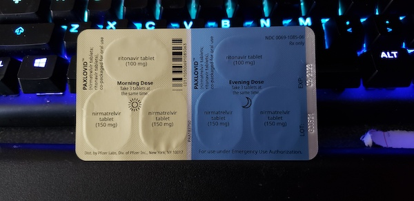

On June 7th, I was doing a product launch livestream. This was a huge event for me and one I’m still very proud of. I’ve been doing technical speaking and development on serverless architectures for a few years so the opportunity to join a cloud provider launching its first Functions as a Service product was a huge experience for me and one that was very much my jam. Months of prep work and I was at the start of a glut of activities. This livestream was just the first. Half-way through, I started to feel winded.
Of course, that part was natural. I’m asthmatic already and talking in ‘High Octane’ mode for an hour would be a lot. I had also taken an at-home test the day before and I was negative for COVID-19, so it must have been my allergies.
“It wasn’t,” says the narrator.
I had a minor asthma attack after the event during our post-show wrap-up where we thanked all of our guests. Again, I’m asthmatic, and that’s just a thing that happens sometimes.
I tested again, and I was VERY POSITIVE. You know you’re positive if the line is bright red before the control line shows up.
Did I mention I had three weeks of this promo to do?
I should mention how I got COVID. My parents went to a wedding for my anti-masker cousin’s daughter because Their Freedom, I guess. I’m not saying there was an outbreak, but my dad did get COVID as well as one of my aunts (and allegedly everyone and their tables). My parents are in their 70s, so they were kept separate and my husband was out of the country, which meant I was taking care of everyone. Then my oldest son, aged 9 years old, got it, missing the last days of school who immediately got quarantined with my dad. The night before my livestream, my 6 year old son got it.
You can take care of so many people and dodge so many bullets before one gets you.
Now back to where we are, where I got it. By this time, my dad and my 9 year old were already asymptomatic but still quarantined until they tested negative. Their symptoms was like a persistent flu. So was my 6 year old’s. So I thought maybe, just maybe, I had been worried for nothing.
I called my doctor. HA, HA no I didn’t, I sent her an e-mail. Because I’m incapable of judging the severity of my own health in an emergency.
I tested positive today for Covid. It’s an issue for me to breathe and I have to push air in and out to do so as if I’m having an asthmatic stress. Any advice would be appreciated, thank you!
Yes. That is how I described the shortness of breath. I was only positive for a few hours so far, and I was already under distress. But at the time, it was just the breathing. She sent me Paxlovid, some new miracle anti-viral that was approved only earlier that year. She signed off her part of the conversation with, “If this doesn’t work, go to the ER immediately.” You see, I have a reputation.

I heard stories. A common symptom was the breathlessness. Multiple people saying, ‘It’s like an elephant sitting on your chest.’ Well, that’s how I am all the time. So I was terrified. Would I asphyxiate? Are they going to send me to the hospital because that shit’s expensive and I don’t wanna.
What I haven’t read was about the stabbing.
Oh? The stabbing, you ask? I didn’t asphyxiate. What did happen was my ribs turning into knives. Every breath felt like searing hot razor wire cutting into my flesh from the inside. Every cough was a stabbing pain between my shoulders. I had a dull, radiating pain in all of my joints. My fever during this peaked at 104.7 degrees Farenheit. I’ve been in the hospital for different things before but this was new and unwelcome.
But Paxlovid was a dang miracle. It’s a 5-day regiment with 3 pills in the morning and 3 pills in the evening. By Day 4, my fever was down to a ‘reasonable’ non-hospital worthy temperature in the high 101s and I could breathe without screaming. By Day 6, the fever had completely broken and I could stand up again.
By Day 8, I was mobile and Livestreaming again. Because this launch was huge for me. Watch the tape back and you can hardly notice.
Day 10, I tested negative. I was so happy. I got hit a little harder than the rest of my family, but we all survived only a little worse for wear.
Again, no.
Have you heard of Long COVID? Because it’s not what I thought it was! I thought it referred to Long Haulers, where you were hospitalized for longer than 3 weeks and ended up with life long respiratory issues.
That is not what it is. According to the CDC, “Some people who have been infected with the virus that causes COVID-19 can experience long-term effects from their infection, known as post-COVID conditions (PCC) or long COVID.”
Excuse me? Any post-COVID conditions?
I must have been excited before but I hadn’t noticed. But you know who did notice? Anyone who had to interact with me when I wasn’t ‘ON’. I suffered from severe fatigue which would lead to me just falling asleep at random points during the day regardless of how much rest I had the night before. The pain in my ribs only dulled. The brain fog was real. I’ve been pregnant twice, I know what brain fog is. It’s the body’s way of tricking a human body into forgetting the severe pain that is the birthing process by making you forget that shit ever happened. Post-COVID, I would either space out or black out completely. There would be blocks of time that were just gone. I also had a difficulty gauging time, but frankly I’ve been having problems with that since lockdown.
Another thing to be worried about, yay, which isn’t generalized anxiety when there’s literal things to be worried about all the time. They said long COVID could last anywhere between one to six months if not for the rest of your life.
Do you know how many chronic conditions I have right now? Enough that I don’t have the time to deal with this shit.
It didn’t last six months. I was lucky, it was only a month. It’s July 14th. It’s been several days since I’ve randomly passed out during the day. I’m in PT to help with the pain which is nearly gone. I’m remembering things and knowing what time of day it is like some sort of psychic.
That’s why I wrote this. I didn’t hear about experiences like mine, so I wanted this out there. Whenever someone I know got COVID, I’d ask if what they thought of the taste of Paxlovid, because there’s a lot of posts saying it’s the worst thing they’ve ever had to choke down. Personally, I’m sick often enough that it’s #3 in flavors I hate. Or how much like knives do their ribs feel? You know, looking for sympathy. But someone was ‘you know that’s for the most extreme cases.’ I DIDN’T UNTIL YOU TOLD ME. I am nothing, if not extreme, I guess.
I want people to know why I’m double-masked outside on a Summer’s day. Why I’m always paranoid about what I touch or who I’m with. Because this sucked.
I think, truly, that it’s done.
But if I get it again and I get hospitalized, someone’s gonna pay.